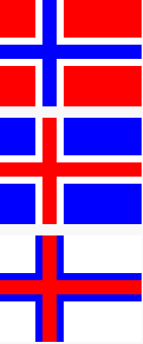
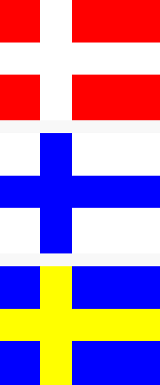
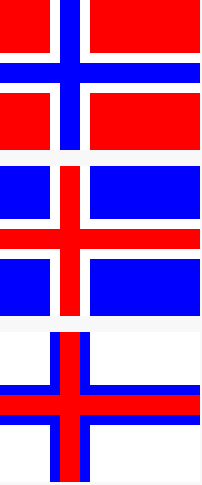
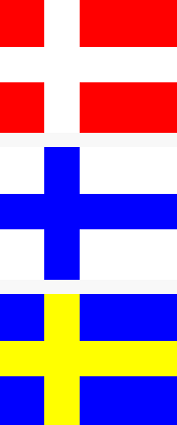

Bilder av resultat fra flagg oppgaven og Hanoi tårnet
 

Jeg heter Luke, jeg er 19 år og jeg kommer fra Karmøy. Jeg hadde ingen erfaring med programmering før jeg kom her, men har lært veldig mye i løpet av tiden jeg har vært her. Jeg lærte meg blant annet hvordan å kode på pyret, python, javascript og html. Ikke noe kompleks koding, men jeg kan lage figurer og tekst. For eksempel har jeg laget en kode som kan generere et bilde av hver av de 5 skandinaviske flaggene. Jeg har også prøvd å lage en kode for Hanoi tårnet sammen med gruppen min. Disse oppgavene har lært oss mye hvordan å tenke som en programmer og komme oss fram til løsninger for komplekse problemer step by step. Link til desse oppgåvene finner du her
 
Figur: JavaScript Canvas
Figur: JavaScript SVG